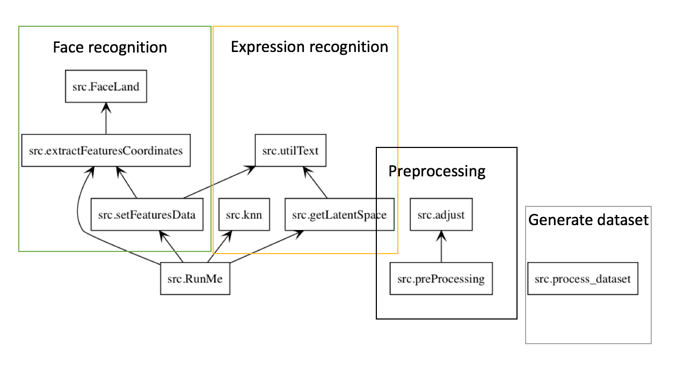

Introduction¶
This document is written for introduce the project “Reconnaissance des émotions”.
The project contains the following four components.
- Extract the image from the image database and classify it to form the original database.
process_dataset.py
- Image pre-processing, in order to improve the speed and accuracy of expression recognition. Brightness Normalization and Geometric Normalization
adjust.py
preProcessing.py
- The recognition part, extracting the feature value of the human face from the picture.
extractFeaturesCoordinates.py
FaceLand.py
setFeaturesData.py : Save features data to the text files.
utilText.py : I/O functions.
- The expression recognition section, predict and use the kNN classification method to classify the result.
getLatentSpace.py
knn.py
RunMe.py : Main function.
This is the package diagram of this project.
